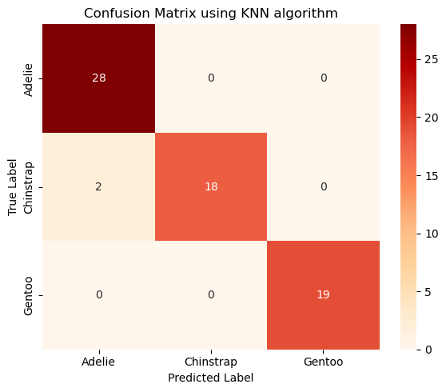
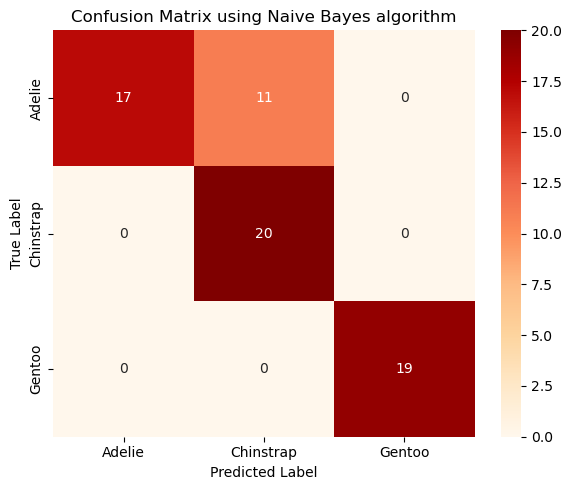
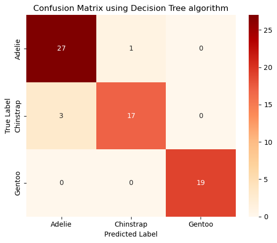
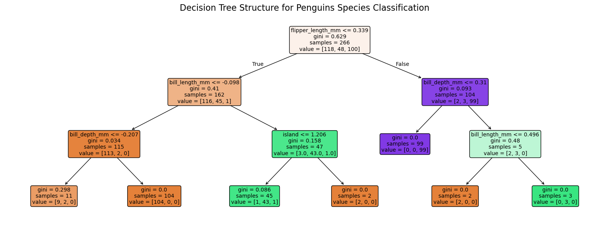
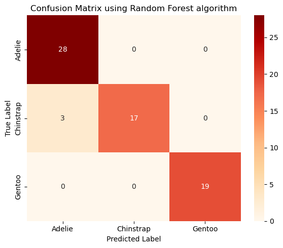
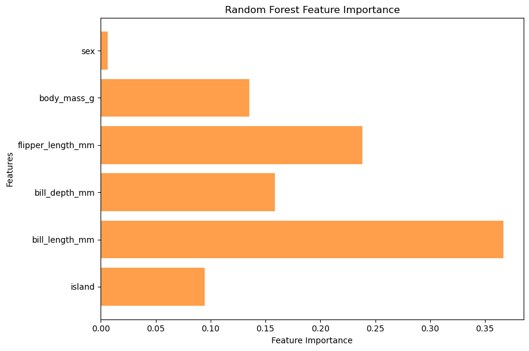
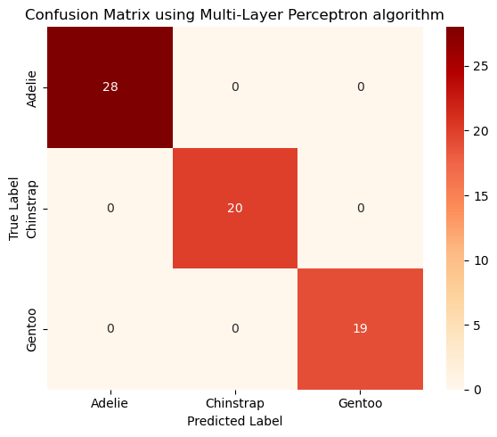
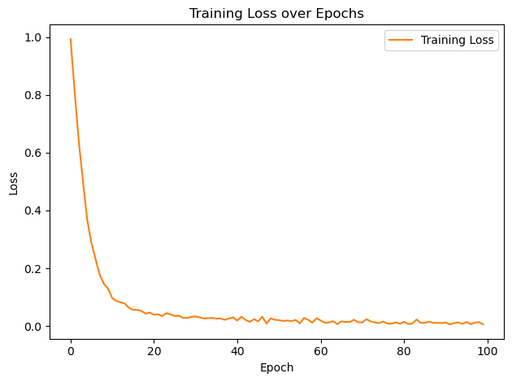
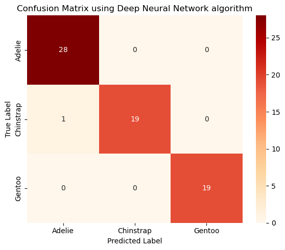
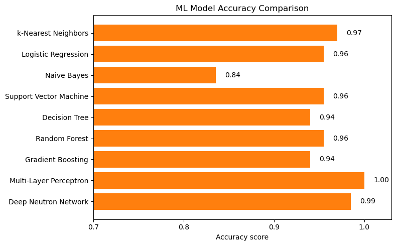

Supervised Learning (I): Classification
import numpy as np
import matplotlib.pyplot as plt
import pandas as pd
import seaborn as sns
1. The Penguins Dataset
penguins = sns.load_dataset('penguins')
penguins
| species | island | bill_length_mm | bill_depth_mm | flipper_length_mm | body_mass_g | sex | |
|---|---|---|---|---|---|---|---|
| 0 | Adelie | Torgersen | 39.1 | 18.7 | 181.0 | 3750.0 | Male |
| 1 | Adelie | Torgersen | 39.5 | 17.4 | 186.0 | 3800.0 | Female |
| 2 | Adelie | Torgersen | 40.3 | 18.0 | 195.0 | 3250.0 | Female |
| 3 | Adelie | Torgersen | NaN | NaN | NaN | NaN | NaN |
| 4 | Adelie | Torgersen | 36.7 | 19.3 | 193.0 | 3450.0 | Female |
| ... | ... | ... | ... | ... | ... | ... | ... |
| 339 | Gentoo | Biscoe | NaN | NaN | NaN | NaN | NaN |
| 340 | Gentoo | Biscoe | 46.8 | 14.3 | 215.0 | 4850.0 | Female |
| 341 | Gentoo | Biscoe | 50.4 | 15.7 | 222.0 | 5750.0 | Male |
| 342 | Gentoo | Biscoe | 45.2 | 14.8 | 212.0 | 5200.0 | Female |
| 343 | Gentoo | Biscoe | 49.9 | 16.1 | 213.0 | 5400.0 | Male |
344 rows × 7 columns
penguins.describe()
| bill_length_mm | bill_depth_mm | flipper_length_mm | body_mass_g | |
|---|---|---|---|---|
| count | 342.000000 | 342.000000 | 342.000000 | 342.000000 |
| mean | 43.921930 | 17.151170 | 200.915205 | 4201.754386 |
| std | 5.459584 | 1.974793 | 14.061714 | 801.954536 |
| min | 32.100000 | 13.100000 | 172.000000 | 2700.000000 |
| 25% | 39.225000 | 15.600000 | 190.000000 | 3550.000000 |
| 50% | 44.450000 | 17.300000 | 197.000000 | 4050.000000 |
| 75% | 48.500000 | 18.700000 | 213.000000 | 4750.000000 |
| max | 59.600000 | 21.500000 | 231.000000 | 6300.000000 |
sns.pairplot(penguins[["species", "bill_length_mm", "bill_depth_mm", "flipper_length_mm", "body_mass_g"]], hue="species", height=2.0)
<seaborn.axisgrid.PairGrid at 0x22a15f35150>

2. Data Preparation
2.1 Handling missing values and outliers
# remove missing values
penguins_classification = penguins.dropna()
penguins_classification
| species | island | bill_length_mm | bill_depth_mm | flipper_length_mm | body_mass_g | sex | |
|---|---|---|---|---|---|---|---|
| 0 | Adelie | Torgersen | 39.1 | 18.7 | 181.0 | 3750.0 | Male |
| 1 | Adelie | Torgersen | 39.5 | 17.4 | 186.0 | 3800.0 | Female |
| 2 | Adelie | Torgersen | 40.3 | 18.0 | 195.0 | 3250.0 | Female |
| 4 | Adelie | Torgersen | 36.7 | 19.3 | 193.0 | 3450.0 | Female |
| 5 | Adelie | Torgersen | 39.3 | 20.6 | 190.0 | 3650.0 | Male |
| ... | ... | ... | ... | ... | ... | ... | ... |
| 338 | Gentoo | Biscoe | 47.2 | 13.7 | 214.0 | 4925.0 | Female |
| 340 | Gentoo | Biscoe | 46.8 | 14.3 | 215.0 | 4850.0 | Female |
| 341 | Gentoo | Biscoe | 50.4 | 15.7 | 222.0 | 5750.0 | Male |
| 342 | Gentoo | Biscoe | 45.2 | 14.8 | 212.0 | 5200.0 | Female |
| 343 | Gentoo | Biscoe | 49.9 | 16.1 | 213.0 | 5400.0 | Male |
333 rows × 7 columns
# check duplicate values
penguins_classification.duplicated().value_counts()
False 333
Name: count, dtype: int64
2.2 Encoding categorical variables
# label encoding
from sklearn.preprocessing import LabelEncoder
encoder = LabelEncoder()
# encode `species` column with 0=Adelie, 1=Chinstrap, and 2=Gentoo
penguins_classification.loc[:, 'species'] = encoder.fit_transform(penguins_classification['species'])
# encode `island` column with 0=Biscoe, 1=Dream and 2=Torgersen
penguins_classification.loc[:, 'island'] = encoder.fit_transform(penguins_classification['island'])
# encode `sex` column with 0=Female, and 1=Male
penguins_classification.loc[:, 'sex'] = encoder.fit_transform(penguins_classification['sex'])
penguins_classification
| species | island | bill_length_mm | bill_depth_mm | flipper_length_mm | body_mass_g | sex | |
|---|---|---|---|---|---|---|---|
| 0 | 0 | 2 | 39.1 | 18.7 | 181.0 | 3750.0 | 1 |
| 1 | 0 | 2 | 39.5 | 17.4 | 186.0 | 3800.0 | 0 |
| 2 | 0 | 2 | 40.3 | 18.0 | 195.0 | 3250.0 | 0 |
| 4 | 0 | 2 | 36.7 | 19.3 | 193.0 | 3450.0 | 0 |
| 5 | 0 | 2 | 39.3 | 20.6 | 190.0 | 3650.0 | 1 |
| ... | ... | ... | ... | ... | ... | ... | ... |
| 338 | 2 | 0 | 47.2 | 13.7 | 214.0 | 4925.0 | 0 |
| 340 | 2 | 0 | 46.8 | 14.3 | 215.0 | 4850.0 | 0 |
| 341 | 2 | 0 | 50.4 | 15.7 | 222.0 | 5750.0 | 1 |
| 342 | 2 | 0 | 45.2 | 14.8 | 212.0 | 5200.0 | 0 |
| 343 | 2 | 0 | 49.9 | 16.1 | 213.0 | 5400.0 | 1 |
333 rows × 7 columns
3. Data Processing
3.1 Data splitting
# splitting into features and labels
X = penguins_classification.drop(['species'], axis=1)
y = penguins_classification['species'].astype('int')
# splitting into training and testing sets
from sklearn.model_selection import train_test_split
# "stratify=y" ensures class distribution is preserved during train/test split
X_train, X_test, y_train, y_test = train_test_split(X, y, test_size=0.2, random_state=123)
print(f"Number of examples for training is {len(X_train)} and test is {len(X_test)}")
Number of examples for training is 266 and test is 67
3.2 Feature scaling
from sklearn.preprocessing import StandardScaler
scaler = StandardScaler()
X_train_scaled = scaler.fit_transform(X_train)
X_test_scaled = scaler.transform(X_test)
4. Training Model & Evaluating Model Performance
4.1 k-Nearest Neighbors (KNN)
from sklearn.neighbors import KNeighborsClassifier
knn_model = KNeighborsClassifier(n_neighbors=3)
knn_model.fit(X_train_scaled, y_train)
KNeighborsClassifier(n_neighbors=3)In a Jupyter environment, please rerun this cell to show the HTML representation or trust the notebook.
On GitHub, the HTML representation is unable to render, please try loading this page with nbviewer.org.
Parameters
| n_neighbors | 3 | |
| weights | 'uniform' | |
| algorithm | 'auto' | |
| leaf_size | 30 | |
| p | 2 | |
| metric | 'minkowski' | |
| metric_params | None | |
| n_jobs | None |
# predict on testing data
y_pred_knn = knn_model.predict(X_test_scaled)
# evaluate model performance
from sklearn.metrics import classification_report, accuracy_score
score_knn = accuracy_score(y_test, y_pred_knn)
print("Accuracy for k-Nearest Neighbors:", score_knn)
print("\nClassification Report:\n", classification_report(y_test, y_pred_knn))
Accuracy for k-Nearest Neighbors: 0.9701492537313433
Classification Report:
precision recall f1-score support
0 0.93 1.00 0.97 28
1 1.00 0.90 0.95 20
2 1.00 1.00 1.00 19
accuracy 0.97 67
macro avg 0.98 0.97 0.97 67
weighted avg 0.97 0.97 0.97 67
from sklearn.metrics import confusion_matrix
def plot_confusion_matrix(conf_matrix, title, fig_name):
plt.figure(figsize=(6, 5))
sns.heatmap(conf_matrix, annot=True, fmt='d', cmap='OrRd',
xticklabels=["Adelie", "Chinstrap", "Gentoo"],
yticklabels=['Adelie', 'Chinstrap', 'Gentoo'], cbar=True)
plt.xlabel("Predicted Label")
plt.ylabel("True Label")
plt.title(title)
plt.tight_layout()
# plt.savefig(fig_name)
# compute and plot confusion matrix
cm_knn = confusion_matrix(y_test, y_pred_knn)
plot_confusion_matrix(cm_knn, "Confusion Matrix using KNN algorithm", "5-confusion-matrix-knn.png")

4.2 Logistic Regression
from sklearn.linear_model import LogisticRegression
lr_model = LogisticRegression(random_state = 123)
lr_model.fit(X_train_scaled, y_train)
LogisticRegression(random_state=123)In a Jupyter environment, please rerun this cell to show the HTML representation or trust the notebook.
On GitHub, the HTML representation is unable to render, please try loading this page with nbviewer.org.
Parameters
| penalty | 'l2' | |
| dual | False | |
| tol | 0.0001 | |
| C | 1.0 | |
| fit_intercept | True | |
| intercept_scaling | 1 | |
| class_weight | None | |
| random_state | 123 | |
| solver | 'lbfgs' | |
| max_iter | 100 | |
| multi_class | 'deprecated' | |
| verbose | 0 | |
| warm_start | False | |
| n_jobs | None | |
| l1_ratio | None |
y_pred_lr = lr_model.predict(X_test_scaled)
score_lr = accuracy_score(y_test, y_pred_lr)
print("Accuracy for Logistic Regression:", score_lr )
print("\nClassification Report:\n", classification_report(y_test, y_pred_lr))
Accuracy for Logistic Regression: 0.9552238805970149
Classification Report:
precision recall f1-score support
0 0.90 1.00 0.95 28
1 1.00 0.85 0.92 20
2 1.00 1.00 1.00 19
accuracy 0.96 67
macro avg 0.97 0.95 0.96 67
weighted avg 0.96 0.96 0.95 67
cm_lr = confusion_matrix(y_test, y_pred_lr)
plot_confusion_matrix(cm_lr, "Confusion Matrix using Logistic Regression algorithm", "5-confusion-matrix-lr.png")
4.3 Naive Bayes
from sklearn.naive_bayes import GaussianNB
# initialize and train Gaussian Naive Bayes classifier
nb_model = GaussianNB()
nb_model.fit(X_train_scaled, y_train)
GaussianNB()In a Jupyter environment, please rerun this cell to show the HTML representation or trust the notebook.
On GitHub, the HTML representation is unable to render, please try loading this page with nbviewer.org.
Parameters
| priors | None | |
| var_smoothing | 1e-09 |
y_pred_nb = nb_model.predict(X_test_scaled)
score_nb = accuracy_score(y_test, y_pred_nb)
print("Accuracy for Naive Bayes:", score_nb)
print("\nClassification Report:\n", classification_report(y_test, y_pred_nb))
Accuracy for Naive Bayes: 0.835820895522388
Classification Report:
precision recall f1-score support
0 1.00 0.61 0.76 28
1 0.65 1.00 0.78 20
2 1.00 1.00 1.00 19
accuracy 0.84 67
macro avg 0.88 0.87 0.85 67
weighted avg 0.89 0.84 0.83 67
cm_nb = confusion_matrix(y_test, y_pred_nb)
plot_confusion_matrix(cm_nb, "Confusion Matrix using Naive Bayes algorithm", "5-confusion-matrix-nb.png")

4.4 Support Vector Machine (SVM)
from sklearn.svm import SVC
# train an SVM classifier (RBF kernel by default)
svm_model = SVC(kernel='rbf', C=1.0, gamma='scale', random_state=123)
svm_model.fit(X_train_scaled, y_train)
SVC(random_state=123)In a Jupyter environment, please rerun this cell to show the HTML representation or trust the notebook.
On GitHub, the HTML representation is unable to render, please try loading this page with nbviewer.org.
Parameters
| C | 1.0 | |
| kernel | 'rbf' | |
| degree | 3 | |
| gamma | 'scale' | |
| coef0 | 0.0 | |
| shrinking | True | |
| probability | False | |
| tol | 0.001 | |
| cache_size | 200 | |
| class_weight | None | |
| verbose | False | |
| max_iter | -1 | |
| decision_function_shape | 'ovr' | |
| break_ties | False | |
| random_state | 123 |
y_pred_svm = svm_model.predict(X_test_scaled)
score_svm = accuracy_score(y_test, y_pred_svm)
print("Accuracy for Support Vector Machine:", score_svm)
print("\nClassification Report:\n", classification_report(y_test, y_pred_svm))
Accuracy for Support Vector Machine: 0.9552238805970149
Classification Report:
precision recall f1-score support
0 0.90 1.00 0.95 28
1 1.00 0.85 0.92 20
2 1.00 1.00 1.00 19
accuracy 0.96 67
macro avg 0.97 0.95 0.96 67
weighted avg 0.96 0.96 0.95 67
cm_svm = confusion_matrix(y_test, y_pred_svm)
plot_confusion_matrix(cm_svm, "Confusion Matrix using Support Vector Machine algorithm", "5-confusion-matrix-svm.png")
4.5 Decision Tree
from sklearn.tree import DecisionTreeClassifier
dt_model = DecisionTreeClassifier(max_depth=3, random_state = 123)
dt_model.fit(X_train_scaled, y_train)
DecisionTreeClassifier(max_depth=3, random_state=123)In a Jupyter environment, please rerun this cell to show the HTML representation or trust the notebook.
On GitHub, the HTML representation is unable to render, please try loading this page with nbviewer.org.
Parameters
| criterion | 'gini' | |
| splitter | 'best' | |
| max_depth | 3 | |
| min_samples_split | 2 | |
| min_samples_leaf | 1 | |
| min_weight_fraction_leaf | 0.0 | |
| max_features | None | |
| random_state | 123 | |
| max_leaf_nodes | None | |
| min_impurity_decrease | 0.0 | |
| class_weight | None | |
| ccp_alpha | 0.0 | |
| monotonic_cst | None |
y_pred_dt = dt_model.predict(X_test_scaled)
score_dt = accuracy_score(y_test, y_pred_dt)
print("Accuracy for Decision Tree:", score_dt )
print("\nClassification Report:\n", classification_report(y_test, y_pred_dt))
Accuracy for Decision Tree: 0.9402985074626866
Classification Report:
precision recall f1-score support
0 0.90 0.96 0.93 28
1 0.94 0.85 0.89 20
2 1.00 1.00 1.00 19
accuracy 0.94 67
macro avg 0.95 0.94 0.94 67
weighted avg 0.94 0.94 0.94 67
cm_dt = confusion_matrix(y_test, y_pred_dt)
plot_confusion_matrix(cm_dt, "Confusion Matrix using Decision Tree algorithm", "5-confusion-matrix-dt.png")

# plot decision tree structure
from sklearn.tree import plot_tree
plt.figure(figsize=(16, 6))
plot_tree(dt_model, feature_names=X.columns, filled=True, rounded=True, fontsize=10)
plt.title("Decision Tree Structure for Penguins Species Classification", fontsize=16)
plt.tight_layout()
plt.show()

4.6 Random Forest
from sklearn.ensemble import RandomForestClassifier
rf_model = RandomForestClassifier(n_estimators=100, random_state=123)
rf_model.fit(X_train_scaled, y_train)
RandomForestClassifier(random_state=123)In a Jupyter environment, please rerun this cell to show the HTML representation or trust the notebook.
On GitHub, the HTML representation is unable to render, please try loading this page with nbviewer.org.
Parameters
| n_estimators | 100 | |
| criterion | 'gini' | |
| max_depth | None | |
| min_samples_split | 2 | |
| min_samples_leaf | 1 | |
| min_weight_fraction_leaf | 0.0 | |
| max_features | 'sqrt' | |
| max_leaf_nodes | None | |
| min_impurity_decrease | 0.0 | |
| bootstrap | True | |
| oob_score | False | |
| n_jobs | None | |
| random_state | 123 | |
| verbose | 0 | |
| warm_start | False | |
| class_weight | None | |
| ccp_alpha | 0.0 | |
| max_samples | None | |
| monotonic_cst | None |
y_pred_rf = rf_model.predict(X_test_scaled)
score_rf = accuracy_score(y_test, y_pred_rf)
print("Accuracy for Random Forest:", score_rf )
print("\nClassification Report:\n", classification_report(y_test, y_pred_rf))
Accuracy for Random Forest: 0.9552238805970149
Classification Report:
precision recall f1-score support
0 0.90 1.00 0.95 28
1 1.00 0.85 0.92 20
2 1.00 1.00 1.00 19
accuracy 0.96 67
macro avg 0.97 0.95 0.96 67
weighted avg 0.96 0.96 0.95 67
cm_rf = confusion_matrix(y_test, y_pred_rf)
plot_confusion_matrix(cm_rf, "Confusion Matrix using Random Forest algorithm", "5-confusion-matrix-rf.png")

importances = rf_model.feature_importances_
features = X.columns
plt.figure(figsize=(9, 6))
plt.barh(features, importances, color="tab:orange", alpha=0.75)
plt.xlabel("Feature Importance")
plt.ylabel("Features")
plt.title("Random Forest Feature Importance")
plt.tight_layout()
plt.show()

4.7 Gradient Boosting
from sklearn.ensemble import GradientBoostingClassifier
gb_model = GradientBoostingClassifier(n_estimators=100, learning_rate=0.1,
max_depth=3, random_state=123)
gb_model.fit(X_train_scaled, y_train)
GradientBoostingClassifier(random_state=123)In a Jupyter environment, please rerun this cell to show the HTML representation or trust the notebook.
On GitHub, the HTML representation is unable to render, please try loading this page with nbviewer.org.
Parameters
| loss | 'log_loss' | |
| learning_rate | 0.1 | |
| n_estimators | 100 | |
| subsample | 1.0 | |
| criterion | 'friedman_mse' | |
| min_samples_split | 2 | |
| min_samples_leaf | 1 | |
| min_weight_fraction_leaf | 0.0 | |
| max_depth | 3 | |
| min_impurity_decrease | 0.0 | |
| init | None | |
| random_state | 123 | |
| max_features | None | |
| verbose | 0 | |
| max_leaf_nodes | None | |
| warm_start | False | |
| validation_fraction | 0.1 | |
| n_iter_no_change | None | |
| tol | 0.0001 | |
| ccp_alpha | 0.0 |
y_pred_gb = gb_model.predict(X_test_scaled)
score_gb = accuracy_score(y_test, y_pred_gb)
print("Accuracy for Gradient Boosting:", score_gb)
print("\nClassification Report:\n", classification_report(y_test, y_pred_gb))
Accuracy for Gradient Boosting: 0.9402985074626866
Classification Report:
precision recall f1-score support
0 0.90 0.96 0.93 28
1 0.94 0.85 0.89 20
2 1.00 1.00 1.00 19
accuracy 0.94 67
macro avg 0.95 0.94 0.94 67
weighted avg 0.94 0.94 0.94 67
cm_gb = confusion_matrix(y_test, y_pred_gb)
plot_confusion_matrix(cm_gb, "Confusion Matrix using Gradient Boosting algorithm", "5-confusion-matrix-gb.png")
4.8 Multi-Layer Perceptron (simple neural networks)
from sklearn.neural_network import MLPClassifier
mlp_model = MLPClassifier(hidden_layer_sizes=(16), activation='relu', solver='adam',
alpha=0, batch_size=8, learning_rate='constant',
learning_rate_init=0.001, max_iter=1000,
random_state=123, n_iter_no_change=10)
mlp_model.fit(X_train_scaled, y_train)
MLPClassifier(alpha=0, batch_size=8, hidden_layer_sizes=16, max_iter=1000,
random_state=123)In a Jupyter environment, please rerun this cell to show the HTML representation or trust the notebook. On GitHub, the HTML representation is unable to render, please try loading this page with nbviewer.org.
Parameters
| hidden_layer_sizes | 16 | |
| activation | 'relu' | |
| solver | 'adam' | |
| alpha | 0 | |
| batch_size | 8 | |
| learning_rate | 'constant' | |
| learning_rate_init | 0.001 | |
| power_t | 0.5 | |
| max_iter | 1000 | |
| shuffle | True | |
| random_state | 123 | |
| tol | 0.0001 | |
| verbose | False | |
| warm_start | False | |
| momentum | 0.9 | |
| nesterovs_momentum | True | |
| early_stopping | False | |
| validation_fraction | 0.1 | |
| beta_1 | 0.9 | |
| beta_2 | 0.999 | |
| epsilon | 1e-08 | |
| n_iter_no_change | 10 | |
| max_fun | 15000 |
# print MLP network information
print("Number of layers (including input and output):", mlp_model.n_layers_)
print("Input layer size:", mlp_model.coefs_[0].shape[0])
print("Output layer size:", mlp_model.coefs_[-1].shape[1])
print("Hidden layer sizes:", [coef.shape[1] for coef in mlp_model.coefs_[:-1]])
Number of layers (including input and output): 3
Input layer size: 6
Output layer size: 3
Hidden layer sizes: [16]
y_pred_mlp = mlp_model.predict(X_test_scaled)
score_mlp = accuracy_score(y_test, y_pred_mlp)
print("Accuracy for Neural Network:", score_mlp)
print("\nClassification Report:\n", classification_report(y_test, y_pred_mlp))
Accuracy for Neural Network: 1.0
Classification Report:
precision recall f1-score support
0 1.00 1.00 1.00 28
1 1.00 1.00 1.00 20
2 1.00 1.00 1.00 19
accuracy 1.00 67
macro avg 1.00 1.00 1.00 67
weighted avg 1.00 1.00 1.00 67
cm_mlp = confusion_matrix(y_test, y_pred_mlp)
plot_confusion_matrix(cm_mlp, "Confusion Matrix using Multi-Layer Perceptron algorithm", "5-confusion-matrix-mlp.png")

4.9 Deep Neural Networks
from tensorflow import keras
X = penguins_classification.drop(['species','island', 'sex'], axis=1)
y = penguins_classification['species'].astype('int')
# encoding categorical variables using `get_dummies`
y = pd.get_dummies(penguins_classification['species']).astype(np.int8)
y.columns = ['Adelie', 'Chinstrap', 'Gentoo']
X_train, X_test, y_train, y_test = train_test_split(X, y, test_size=0.2, random_state=123)
print(f"Number of examples for training is {len(X_train)} and test is {len(X_test)}")
# standardize features
scaler = StandardScaler()
X_train_scaled = scaler.fit_transform(X_train)
X_test_scaled = scaler.transform(X_test)
Number of examples for training is 266 and test is 67
## construct deep neuron network using the ``Sequential()`` constructor
from tensorflow.keras.layers import Dense, Dropout
dnn_model = keras.Sequential([
keras.Input(shape=(X_train_scaled.shape[1],)), # input: 4 input features
Dense(32, activation="relu"),
Dropout(0.2),
Dense(16, activation="relu"),
# Dropout(0.0),
Dense(8, activation="relu"),
Dense(3, activation="softmax") # output: 3 classes
])
dnn_model.summary()
Model: "sequential"
_________________________________________________________________
Layer (type) Output Shape Param #
=================================================================
dense (Dense) (None, 32) 160
dropout (Dropout) (None, 32) 0
dense_1 (Dense) (None, 16) 528
dense_2 (Dense) (None, 8) 136
dense_3 (Dense) (None, 3) 27
=================================================================
Total params: 851
Trainable params: 851
Non-trainable params: 0
_________________________________________________________________
# compile DNN model
from keras.optimizers import Adam
dnn_model.compile(optimizer='adam', loss=keras.losses.CategoricalCrossentropy())
# train DNN model
history = dnn_model.fit(X_train_scaled, y_train, batch_size=16, epochs=100, verbose=1)
Epoch 1/100
17/17 [==============================] - 0s 749us/step - loss: 0.9938
Epoch 2/100
17/17 [==============================] - 0s 880us/step - loss: 0.8095
Epoch 3/100
17/17 [==============================] - 0s 761us/step - loss: 0.6356
Epoch 4/100
17/17 [==============================] - 0s 810us/step - loss: 0.4981
Epoch 5/100
17/17 [==============================] - 0s 751us/step - loss: 0.3667
Epoch 6/100
17/17 [==============================] - 0s 686us/step - loss: 0.2881
Epoch 7/100
17/17 [==============================] - 0s 810us/step - loss: 0.2320
Epoch 8/100
17/17 [==============================] - 0s 755us/step - loss: 0.1778
Epoch 9/100
17/17 [==============================] - 0s 748us/step - loss: 0.1459
Epoch 10/100
17/17 [==============================] - 0s 817us/step - loss: 0.1295
Epoch 11/100
17/17 [==============================] - 0s 748us/step - loss: 0.0967
Epoch 12/100
17/17 [==============================] - 0s 686us/step - loss: 0.0870
Epoch 13/100
17/17 [==============================] - 0s 751us/step - loss: 0.0819
Epoch 14/100
17/17 [==============================] - 0s 686us/step - loss: 0.0780
Epoch 15/100
17/17 [==============================] - 0s 686us/step - loss: 0.0636
Epoch 16/100
17/17 [==============================] - 0s 748us/step - loss: 0.0560
Epoch 17/100
17/17 [==============================] - 0s 756us/step - loss: 0.0562
Epoch 18/100
17/17 [==============================] - 0s 686us/step - loss: 0.0521
Epoch 19/100
17/17 [==============================] - 0s 750us/step - loss: 0.0430
Epoch 20/100
17/17 [==============================] - 0s 686us/step - loss: 0.0465
Epoch 21/100
17/17 [==============================] - 0s 748us/step - loss: 0.0393
Epoch 22/100
17/17 [==============================] - 0s 686us/step - loss: 0.0406
Epoch 23/100
17/17 [==============================] - 0s 748us/step - loss: 0.0346
Epoch 24/100
17/17 [==============================] - 0s 686us/step - loss: 0.0447
Epoch 25/100
17/17 [==============================] - 0s 751us/step - loss: 0.0403
Epoch 26/100
17/17 [==============================] - 0s 718us/step - loss: 0.0345
Epoch 27/100
17/17 [==============================] - 0s 817us/step - loss: 0.0362
Epoch 28/100
17/17 [==============================] - 0s 752us/step - loss: 0.0278
Epoch 29/100
17/17 [==============================] - 0s 748us/step - loss: 0.0280
Epoch 30/100
17/17 [==============================] - 0s 748us/step - loss: 0.0315
Epoch 31/100
17/17 [==============================] - 0s 686us/step - loss: 0.0331
Epoch 32/100
17/17 [==============================] - 0s 686us/step - loss: 0.0300
Epoch 33/100
17/17 [==============================] - 0s 686us/step - loss: 0.0259
Epoch 34/100
17/17 [==============================] - 0s 692us/step - loss: 0.0272
Epoch 35/100
17/17 [==============================] - 0s 752us/step - loss: 0.0283
Epoch 36/100
17/17 [==============================] - 0s 748us/step - loss: 0.0255
Epoch 37/100
17/17 [==============================] - 0s 748us/step - loss: 0.0261
Epoch 38/100
17/17 [==============================] - 0s 748us/step - loss: 0.0216
Epoch 39/100
17/17 [==============================] - 0s 748us/step - loss: 0.0260
Epoch 40/100
17/17 [==============================] - 0s 686us/step - loss: 0.0300
Epoch 41/100
17/17 [==============================] - 0s 698us/step - loss: 0.0192
Epoch 42/100
17/17 [==============================] - 0s 748us/step - loss: 0.0324
Epoch 43/100
17/17 [==============================] - 0s 752us/step - loss: 0.0208
Epoch 44/100
17/17 [==============================] - 0s 686us/step - loss: 0.0145
Epoch 45/100
17/17 [==============================] - 0s 694us/step - loss: 0.0238
Epoch 46/100
17/17 [==============================] - 0s 690us/step - loss: 0.0161
Epoch 47/100
17/17 [==============================] - 0s 686us/step - loss: 0.0322
Epoch 48/100
17/17 [==============================] - 0s 748us/step - loss: 0.0090
Epoch 49/100
17/17 [==============================] - 0s 686us/step - loss: 0.0265
Epoch 50/100
17/17 [==============================] - 0s 752us/step - loss: 0.0215
Epoch 51/100
17/17 [==============================] - 0s 686us/step - loss: 0.0204
Epoch 52/100
17/17 [==============================] - 0s 374us/step - loss: 0.0178
Epoch 53/100
17/17 [==============================] - 0s 1ms/step - loss: 0.0190
Epoch 54/100
17/17 [==============================] - 0s 691us/step - loss: 0.0172
Epoch 55/100
17/17 [==============================] - 0s 686us/step - loss: 0.0210
Epoch 56/100
17/17 [==============================] - 0s 748us/step - loss: 0.0092
Epoch 57/100
17/17 [==============================] - 0s 690us/step - loss: 0.0281
Epoch 58/100
17/17 [==============================] - 0s 748us/step - loss: 0.0215
Epoch 59/100
17/17 [==============================] - 0s 594us/step - loss: 0.0117
Epoch 60/100
17/17 [==============================] - 0s 942us/step - loss: 0.0271
Epoch 61/100
17/17 [==============================] - 0s 701us/step - loss: 0.0191
Epoch 62/100
17/17 [==============================] - 0s 748us/step - loss: 0.0113
Epoch 63/100
17/17 [==============================] - 0s 688us/step - loss: 0.0124
Epoch 64/100
17/17 [==============================] - 0s 686us/step - loss: 0.0168
Epoch 65/100
17/17 [==============================] - 0s 754us/step - loss: 0.0065
Epoch 66/100
17/17 [==============================] - 0s 686us/step - loss: 0.0163
Epoch 67/100
17/17 [==============================] - 0s 689us/step - loss: 0.0140
Epoch 68/100
17/17 [==============================] - 0s 748us/step - loss: 0.0138
Epoch 69/100
17/17 [==============================] - 0s 691us/step - loss: 0.0218
Epoch 70/100
17/17 [==============================] - 0s 686us/step - loss: 0.0130
Epoch 71/100
17/17 [==============================] - 0s 748us/step - loss: 0.0124
Epoch 72/100
17/17 [==============================] - 0s 689us/step - loss: 0.0239
Epoch 73/100
17/17 [==============================] - 0s 748us/step - loss: 0.0160
Epoch 74/100
17/17 [==============================] - 0s 689us/step - loss: 0.0127
Epoch 75/100
17/17 [==============================] - 0s 748us/step - loss: 0.0099
Epoch 76/100
17/17 [==============================] - 0s 691us/step - loss: 0.0156
Epoch 77/100
17/17 [==============================] - 0s 686us/step - loss: 0.0085
Epoch 78/100
17/17 [==============================] - 0s 750us/step - loss: 0.0084
Epoch 79/100
17/17 [==============================] - 0s 686us/step - loss: 0.0128
Epoch 80/100
17/17 [==============================] - 0s 694us/step - loss: 0.0079
Epoch 81/100
17/17 [==============================] - 0s 686us/step - loss: 0.0145
Epoch 82/100
17/17 [==============================] - 0s 187us/step - loss: 0.0067
Epoch 83/100
17/17 [==============================] - 0s 748us/step - loss: 0.0093
Epoch 84/100
17/17 [==============================] - 0s 694us/step - loss: 0.0226
Epoch 85/100
17/17 [==============================] - 0s 721us/step - loss: 0.0111
Epoch 86/100
17/17 [==============================] - 0s 686us/step - loss: 0.0111
Epoch 87/100
17/17 [==============================] - 0s 748us/step - loss: 0.0151
Epoch 88/100
17/17 [==============================] - 0s 686us/step - loss: 0.0112
Epoch 89/100
17/17 [==============================] - 0s 500us/step - loss: 0.0111
Epoch 90/100
17/17 [==============================] - 0s 748us/step - loss: 0.0102
Epoch 91/100
17/17 [==============================] - 0s 688us/step - loss: 0.0125
Epoch 92/100
17/17 [==============================] - 0s 822us/step - loss: 0.0056
Epoch 93/100
17/17 [==============================] - 0s 750us/step - loss: 0.0100
Epoch 94/100
17/17 [==============================] - 0s 686us/step - loss: 0.0127
Epoch 95/100
17/17 [==============================] - 0s 686us/step - loss: 0.0076
Epoch 96/100
17/17 [==============================] - 0s 748us/step - loss: 0.0140
Epoch 97/100
17/17 [==============================] - 0s 686us/step - loss: 0.0066
Epoch 98/100
17/17 [==============================] - 0s 749us/step - loss: 0.0122
Epoch 99/100
17/17 [==============================] - 0s 757us/step - loss: 0.0133
Epoch 100/100
17/17 [==============================] - 0s 686us/step - loss: 0.0059
sns.lineplot(x=history.epoch, y=history.history['loss'], c="tab:orange", label='Training Loss')
plt.xlabel("Epoch")
plt.ylabel("Loss")
plt.title("Training Loss over Epochs")
plt.legend()
plt.tight_layout()
plt.show()

# predict class probabilities
y_pred_dnn_probs = dnn_model.predict(X_test_scaled)
# convert probabilities to class labels
y_pred_dnn = np.argmax(y_pred_dnn_probs, axis=1)
y_true = np.argmax(y_test, axis=1)
score_dnn = accuracy_score(y_true, y_pred_dnn)
print("Accuracy for Deep Neutron Network:", score_dnn)
print("\nClassification Report:\n", classification_report(y_true, y_pred_dnn))
3/3 [==============================] - 0s 997us/step
Accuracy for Deep Neutron Network: 0.9850746268656716
Classification Report:
precision recall f1-score support
0 0.97 1.00 0.98 28
1 1.00 0.95 0.97 20
2 1.00 1.00 1.00 19
accuracy 0.99 67
macro avg 0.99 0.98 0.99 67
weighted avg 0.99 0.99 0.99 67
cm_dnn = confusion_matrix(y_true, y_pred_dnn)
plot_confusion_matrix(cm_dnn, "Confusion Matrix using Deep Neural Network algorithm", "5-confusion-matrix-dnn.png")

5. Comparison of Trained Models
scores = {'Deep Neutron Network': score_dnn,
'Multi-Layer Perceptron': score_mlp,
'Gradient Boosting': score_gb,
'Random Forest': score_rf,
'Decision Tree': score_dt,
'Support Vector Machine': score_svm,
'Naive Bayes': score_nb,
'Logistic Regression': score_lr,
'k-Nearest Neighbors': score_knn}
# convert to lists for plotting
model_names = list(scores.keys())
accuracy_scores = list(scores.values())
# plot
plt.figure(figsize=(8, 5))
plt.barh(model_names, accuracy_scores, color='tab:orange')
plt.xlabel('Accuracy score')
plt.title('ML Model Accuracy Comparison')
plt.xlim(0.7, 1.03)
plt.xticks(np.arange(0.7, 1.03, 0.1))
# annotate the bars
for i, score in enumerate(accuracy_scores):
plt.text(score + 0.01, i, f'{score:.2f}', va='center')
plt.tight_layout()
plt.show()

# generate sample data for 9 heatmaps
data1 = cm_knn
data2 = cm_lr
data3 = cm_nb
data4 = cm_svm
data5 = cm_dt
data6 = cm_rf
data7 = cm_gb
data8 = cm_mlp
data9 = cm_dnn
# set up the figure and axes
fig, axs = plt.subplots(3, 3, figsize=(10, 8))
# flatten the axes array for easier iteration
axs = axs.flatten()
# store the heatmaps (for later colorbar use)
heatmaps = []
vmin = min(map(np.min, [data1, data2, data3, data4, data5, data6, data7, data8, data9]))
vmax = max(map(np.max, [data1, data2, data3, data4, data5, data6, data7, data8, data9]))
subtitle = ["k-Nearest Neighbors", "Logistic Regression", "Naive Bayes", "Support Vector Machine",
"Decision Tree", "Random Forest", "Gradient Boosting", "Multi-Layer Perceptron", "Deep Neural Network"]
# Plot the heatmaps with consistent vmin/vmax
for i, data in enumerate([data1, data2, data3, data4, data5, data6, data7, data8, data9]):
hm = sns.heatmap(data, annot=True, ax=axs[i], cmap='OrRd', cbar=False, vmin=vmin, vmax=vmax,
xticklabels=["Adelie", "Chinstrap", "Gentoo"], yticklabels=['Adelie', 'Chinstrap', 'Gentoo'])
axs[i].set_title(subtitle[i])
heatmaps.append(hm)
# Create a universal colorbar
# Position: [left, bottom, width, height] in figure coordinates
cbar_ax = fig.add_axes([0.92, 0.05, 0.03, 0.86])
plt.colorbar(heatmaps[0].collections[0], cax=cbar_ax)
fig.suptitle("Confusion Matrix using varied algorithms", fontsize=16)
# Adjust layout
plt.tight_layout(rect=[0, 0, 0.9, 1]) # Leave space on right for colorbar
plt.show()
C:\Users\wangy\AppData\Local\Temp\ipykernel_3640\4149175151.py:42: UserWarning: This figure includes Axes that are not compatible with tight_layout, so results might be incorrect.
plt.tight_layout(rect=[0, 0, 0.9, 1]) # Leave space on right for colorbar